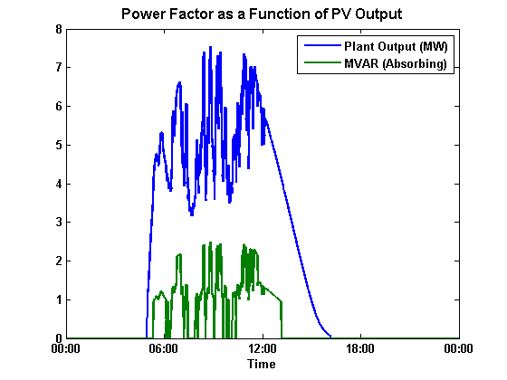

makePFprofile
Creates varying Reactive Power output profile from given power factor schedule or function of PV output
Contents
Syntax
[MW MVar] = makePFprofile(pvTimes,pvOutput,type,filepath,ratedMVA);
Description
Function that takes a schedule (makePFschedule.m) or a function of PV output power (makePFoutputFunction.m) and creates the time varying Reactive Power output profile for the system. The input is the pvOutput (MW) and it is converted to MVar using the given power factor. This is called from createPVscenarioFiles to create the reactive power timeseries given the type of power factor profile
Inputs
- pvTimes - array of times
- pvOutput - array of net power output from the total plant (MVA)
- type - type of PF profile ('schedule' or 'function')
- filepath - filepath to PF schedule or function. These files are generated by either makePFschedule.m or makePFoutputFunction.m
- ratedMVA - ratedMVA of the PV plant
Outputs
- MVar - array of MVar output from each timestep
Example
Runs sample irradiance data through WVM and then uses the saved power factor function to calculate MVAR from MW and power factor
[DSSCircObj, DSSText, gridpvPath] = DSSStartup; load([gridpvPath,'Subfunctions\WVM_subfunctions\Livermore_irr_sensor.mat']); load([gridpvPath,'ExampleCircuit\Ckt24_PV_Central_7_5_PFfunction.mat']); [smooth_irradiance,other_outputs]=pvl_WVM(irr_sensor,plantinfo,10); Power_plant = smooth_irradiance'/1000*plantinfo.MW; MVar = makePFprofile(irr_sensor.time,Power_plant,plantinfo.powerFactor.type,plantinfo.powerFactor.filepath,plantinfo.MWs); plot(irr_sensor.time,Power_plant,'LineWidth',2); hold all; plot(irr_sensor.time,MVar,'LineWidth',2); legend('Plant Output (MW)','MVAR (Absorbing)'); title('Power Factor as a Function of PV Output','FontWeight','bold','FontSize',12); set(gca,'FontSize',10,'FontWeight','bold'); xlabel('Time','FontSize',10,'FontWeight','bold'); datetick('x','HH:MM');